Pantalla de juego
Pantalla de la batalla (modo para 4 jugadores)
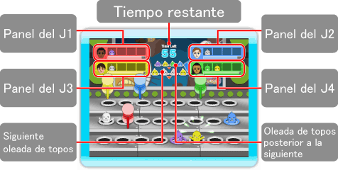
Panel
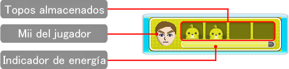
Normas
En tu panel irán apareciendo los topos que vas golpeando. Cuando haya cuatro, tendrás una "mano" según los colores que tengan dichos topos. Cuanto mejor sea tu mano, más energía robarás a tus adversarios. Aquellos jugadores que se queden sin energía abandonarán la partida, y ganará el jugador que sobreviva (o el que tenga más energía cuando termine el tiempo).
Fin de la ronda
La ronda terminará cuando se decidan los últimos puestos de la clasificación o cuando se agote el tiempo. Si solo quedasen jugadores controlados por la consola, la partida terminará automáticamente.
Lista de manos
| 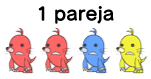 |
Dos topos del mismo color |
Daño leve |
| 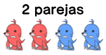 |
Dos parejas del mismo color cada una |
Daño intermedio |
| 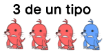 |
Tres topos del mismo color |
Daño severo |
| 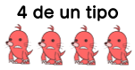 |
Cuatro topos del mismo color |
Daño devastador |
| 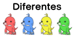 |
Cuatro topos de colores diferentes |
Leve recuperación de energía |
Colores de los topos y daño adicional
Hay topos de seis colores diferentes. Si consigues una mano del mismo color que el martillo de un adversario, éste recibirá más daño que el resto de los jugadores.
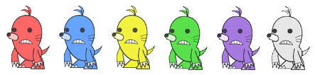
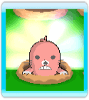
Topo arco iris
El topo arco iris es un comodín porque cambia de color para que tengas la mano más poderosa posible.

Caja
Golpea una caja para recibir una de las siguientes mejoras.
Rellenador del indicador
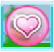 |
Rellena ligeramente tu energía. |
Liberador de topos
|
Libera a los topos que tengan el resto de los jugadores en sus paneles. |
Gran martillo
|
Alarga tu martillo para que sea más fácil golpear a los topos. |
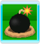
Bombas
Si golpeas una bomba, no podrás golpear a los topos durante un rato.
Pistas
Ten en cuenta qué topos van a aparecer después para tener una estrategia para tu mano. Intenta golpear a los topos con los que sea más fácil tener una buena mano. Además, puedes golpear a otros topos para estropear las manos de tus adversarios.